Themes Parks |
|
Animal Kingdom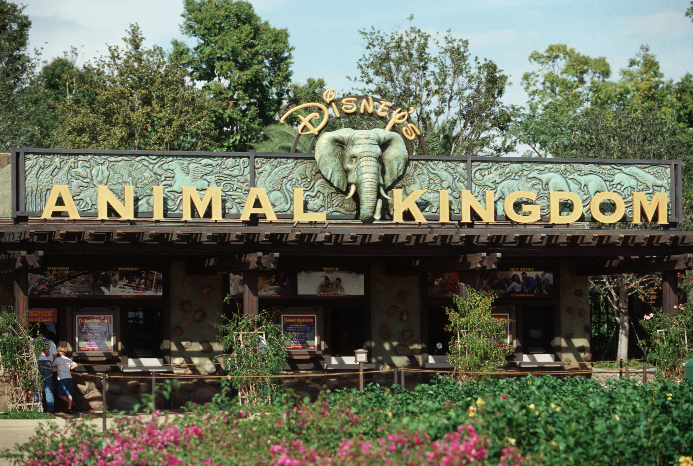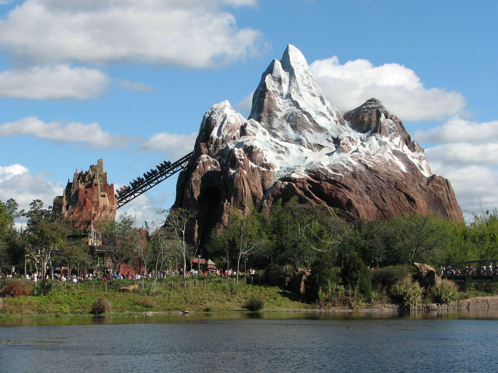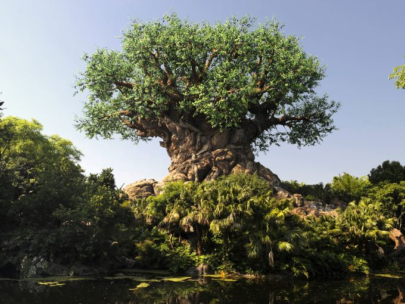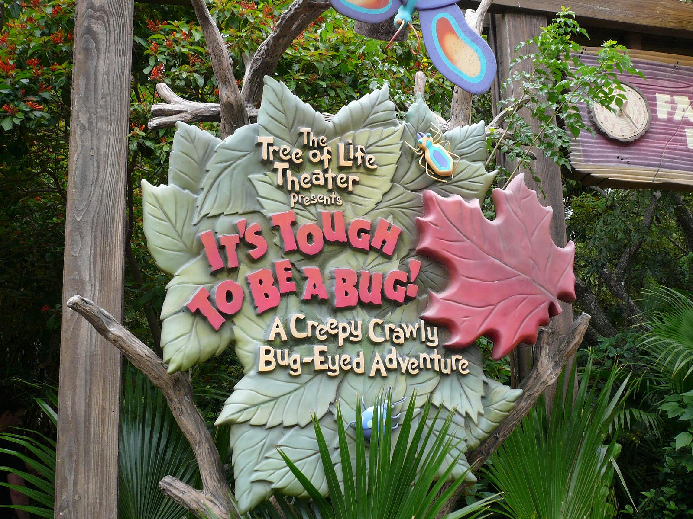In this section of Disney World, you will travel into the great and vast animal kingdom! You will go from the smallest and most inoccent of creatures to the most bold and frightening of beast! In this park you can ride a vast selection of rollercoasters from the fast traveling thrill ride of Expedition everst to the the calm soothing water rides to cool you down on those hot days of fun! But not only that, you can go see a spectacular show like bugs life or you can go see and visit the great tree that stands tall in the midst of the park! But no matter what you do, this park will surely not disappoint you or your family on this day in the great Animal Kingdom! |
|
Magic Kingdom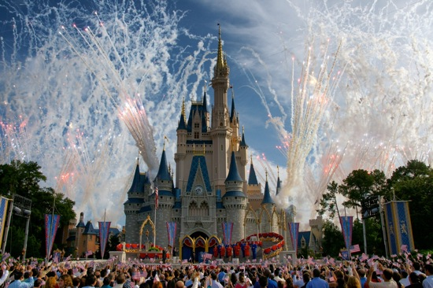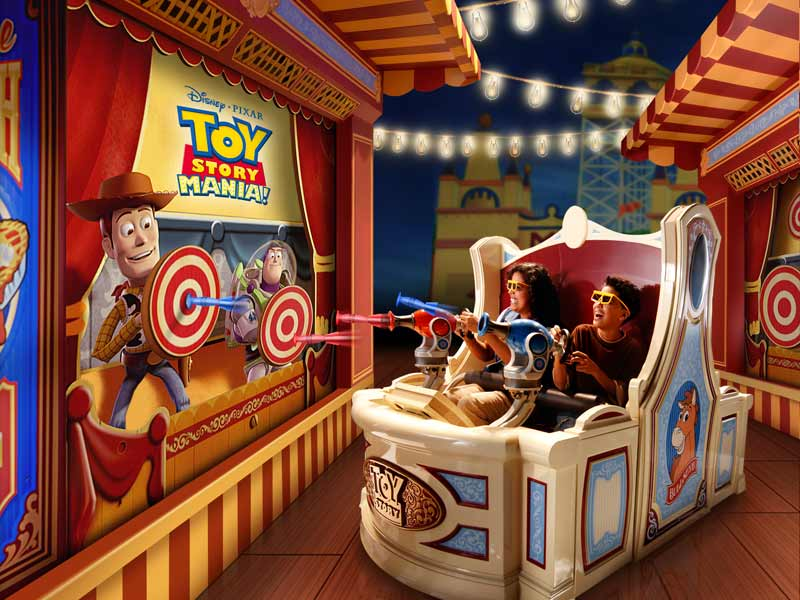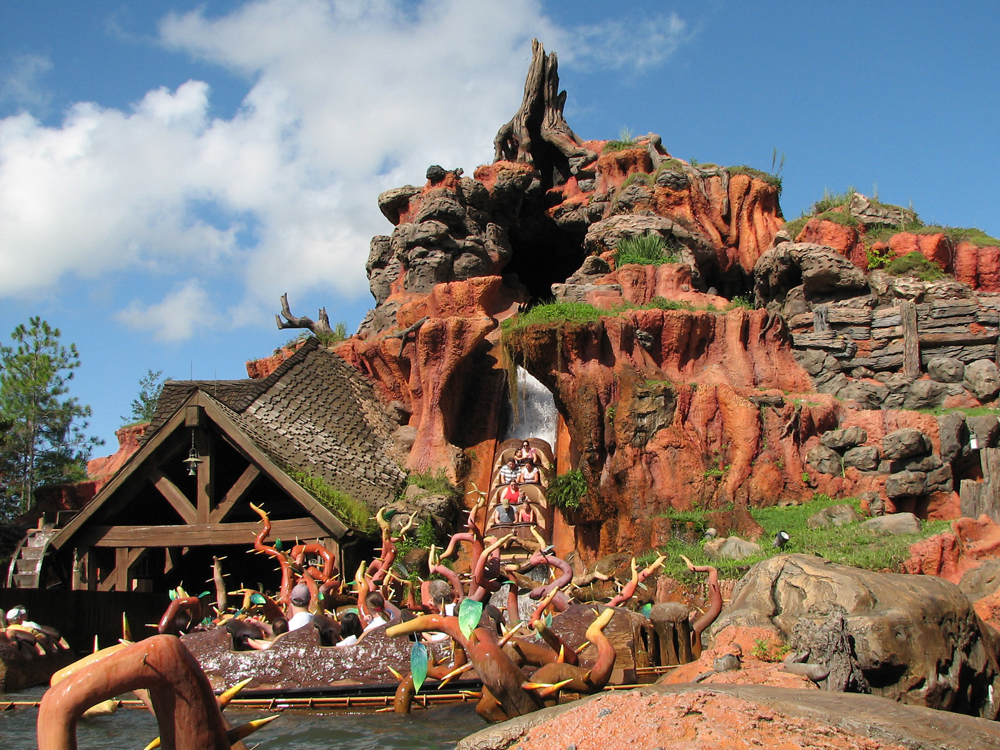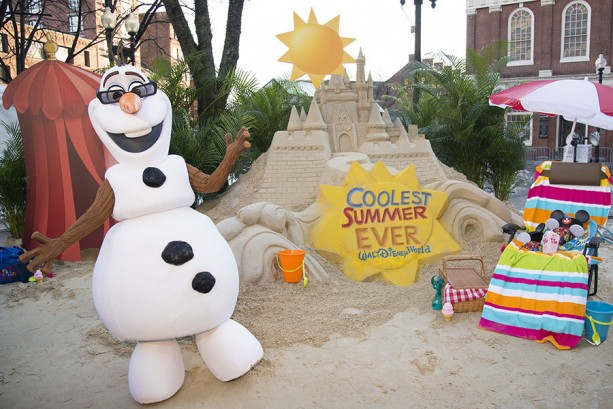In this piece of the park, all the magic come to life! In magic kingdom, you will encounter people and places beyond your imagination! You can do anything in this park plus more! You could try the fun rides in this park like the brear rabbit themed ride, Slash Mountain! Or you could d a fun game ride like Toy Story Mania! Or you can do a personal favorite by many people and visit Cinderella's Castle! But I can assure you that taking some time off to come visit this magical place will not be dissappointing, but will make you fall in love with Disney even more than what you did when you where a young child! |
|
Hollywood Studios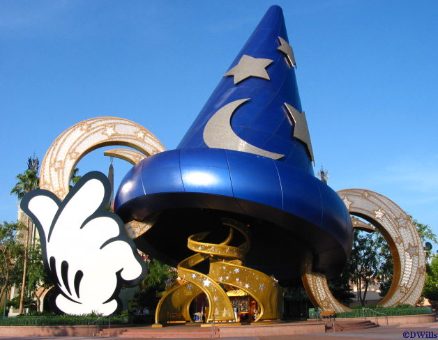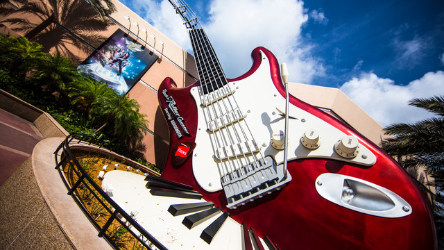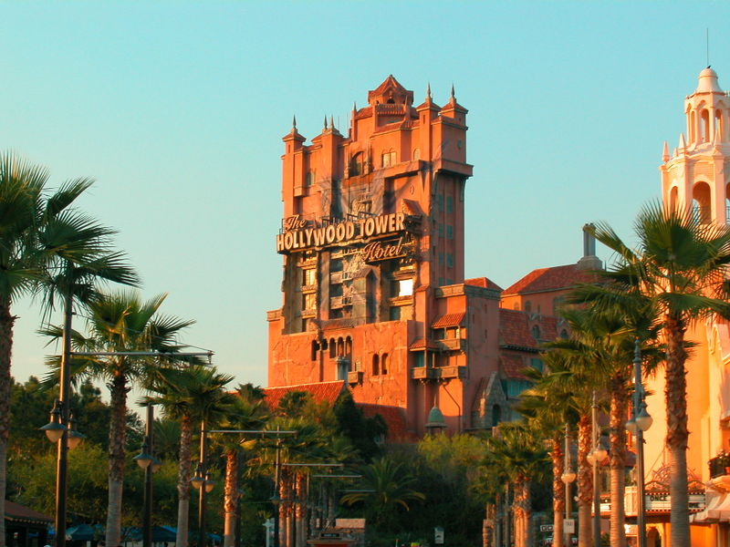 In this park where the silver screen is what makes it count, they have ton of thing for the whole family to enjoy! They have fun themed rides like The Rocken Rollercoaster featuring Areosmith! Or you put your nerves to the test and take a trip over to the Twighlight Zones, Tower Terror! But if your family wants to escape the heat for a minute or just wants to have a good laugh, they can a trip on over to show that Hollywood studios offers like Muppet Vision 3D! But i can guarentee you that when you and your family visit this park, you all will walk out feeling refreshed and star struck! |
|
Epcot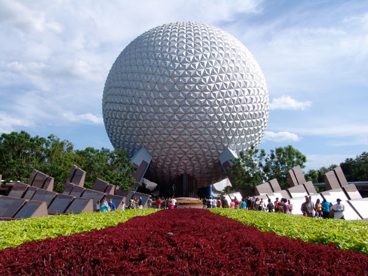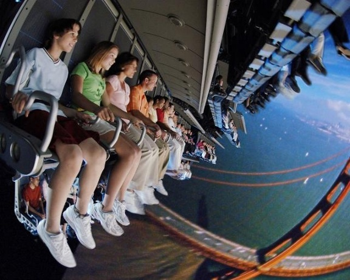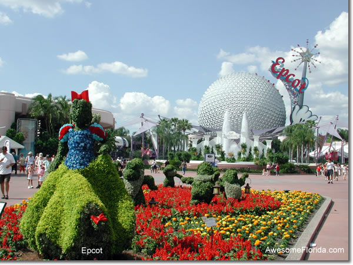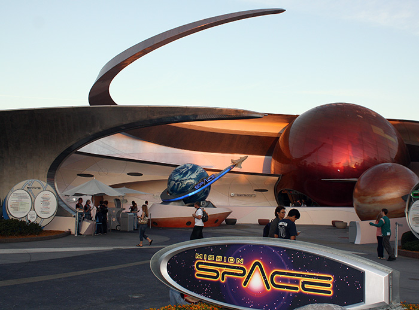In this lovely section of the park, there are so many things to see and discover! You and your family can walk around and see the gorgeous center piece of epcot, the giant silver globe! Or if you like the more senic side of life, you can walk around and see the beautiful gardens that they have scattered around the park! But thats not all! You can go and try the high flying simulation, soarin! But if you want a little bit more of a rush, you can go and learn how to be a austronaut and then travel to space in the loved by many ride Mission Space! But not only this, you can travel around the world of not only Disney but Diseny around the world! Here in epcot, you can walk around and travel through several sections of the world and see how they portray Diseny! But whatever you choose to do here, you will not be sorry that you chose to take a trip into the amazing world of Epcot! |